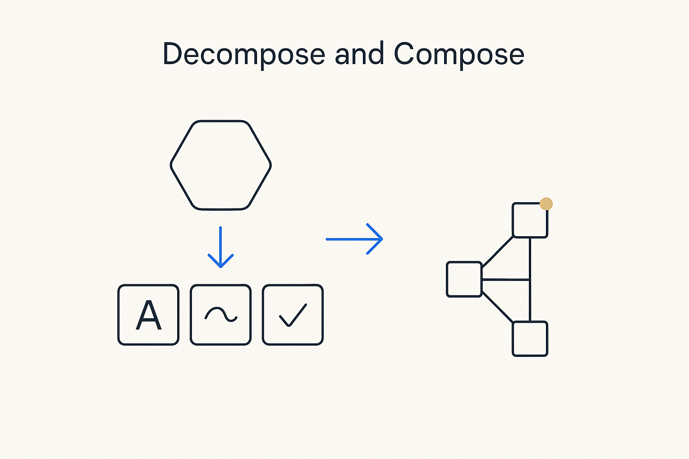

Break the complex whole into small, self-contained parts you can name, model and check one at a time — the core move of thinking in structures.

> Break the complex whole into small, self-contained parts you can name, model and check one at a time — the core move of thinking in structures.
Decomposition is the move that makes complexity workable. A tangled IT landscape, a sprawling business process, a 268-table metamodel — none of it can be held in one glance. The way through is to break the whole into parts small enough to name, model and reason about on their own: an entity, a mapping, a rule, a concept. Each part is self-contained; together they compose the whole without anyone having to hold the whole in their head at once.
This is what thinking in structures actually is. You decompose until each piece has one clear responsibility, then you compose the pieces through explicit relationships — not by blurring them together. It is also what makes the work checkable and reusable: a small, named part can be verified, corrected and reused, where a monolith can only be admired or feared.
Decomposition and simplification are a pair. Decomposition splits the whole into the right parts; simplification makes each part as plain as it can be without losing what matters. Do both and the model becomes something a team — and a machine — can actually work with.
Where it lives: the attitude layer of Breakthrough Modeling — how complexity becomes workable.